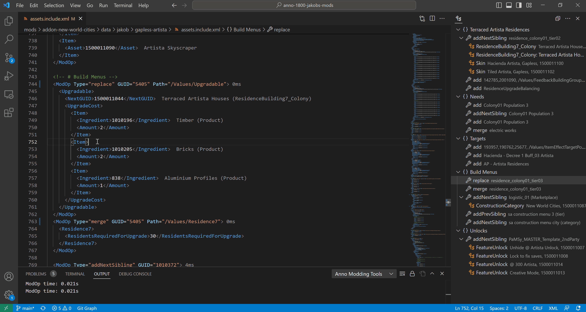

Utilities¶
Templates¶
You can create mods from templates with a structure of common mod files:
- either globally with F1 > Anno: Create Mod from Template,
- or at a specific location by right clicking on a folder in the Explorer view > Anno: Create Mod from Template
The command creates a folder with the Mod ID (asked by input box) and the following files in their correct path: - modinfo.json with mandatory entries - README.md - assets.xml - texts_english.xml - common folders
Show Diff¶

You can check th results of one or more ModOps by selecting them and then right click > Anno: Compare Results with Vanilla.
Alternatively, you can compare full files and mods by right clicking on assets.xml, templates.xml and *.include.xml.
Build and Deploy Mods¶
Requirement: you need to configure your modsFolder as described in Setup.
Automatically convert and copy mod files using a json description.
Features:
- automatically convert files like .png or .gltf to their Anno formats
- copy only wanted files into a separate mod folder (keeps mod output clean)
- create skins of .cfg files without duplicating them
Examples: Sources on GitHub, Compiled Mods
How to call¶
From Visual Studio Code¶
- The status bar shows a button with Anno version and mod ID.
Click that to deploy the mod to your configured
mods/folder. - Alternatively, press
F1to select a mod from your workspace.
From Terminal or GitHub actions¶
You can use the build command also in command line.
Have a look at Jakob's Collection's GitHub publish pipeline to get some hints how to do it.
Download Sub-Mods¶
You can automatically bundle sub-mods and shared files using URLs in ModDependencies and Development.Bundle. For example:
{
// ... the usual modinfocontent
"ModDependencies": [
"https://github.com/anno-mods/shared-resources/releases/download/v10.10/shared-pools-and-definitions.zip"
],
"Development": {
"Bundle": [
"https://github.com/anno-mods/shared-jakob/releases/download/v4.9.4/decals-city-jakob.zip",
"https://github.com/anno-mods/shared-jakob/releases/download/v4.9.4/decals-industry-jakob.zip"
]
}
}
Both options download the file and extract the content into your mod.
Development.Bundle does not add a dependency.
URLs in ModDependencies are a shotcut for the following where the URL is bundled and the zip file name is used as a dependency:
{
// ... the usual modinfocontent
"ModDependencies": [
"shared-pools-and-definitions"
],
"Development": {
"Bundle": [
"https://github.com/anno-mods/shared-resources/releases/download/v10.10/shared-pools-and-definitions.zip"
]
}
}
Change Output Path¶
The default folder name is [Category] Name, saved to your mods/ folder.
You can change that in the modinfo.json:
{
// ... the usual modinfocontent
"Development": {
"DeployPath": "${annoMods}/${modName}"
}
}
Use ${modName} to get [Category] Name created from modinfo.Category.English and modinfo.ModName.English.
Use ${annoMods} to get your local Anno mods/ directory set in the Extension configuration.
Conversions¶
The following are the default conversion if you use a normal modinfo.json file:
| Type | Pattern | Action |
|---|---|---|
| Texture | _diff.png, _metal.png, _norm.png, _height.png, _rga.png |
Create DDS textures with 3 LODs. |
| Icon | icon*.png |
Copy PNG and create DDS textures LODs as needed. |
| Feedback | .cf7 |
Convert to .fc. |
| Models | .gltf |
Extract and convert models with the name _lod0 etc. to individual .rdm files. |
| Skin | .cfg.yaml |
Generate .cfg, .ifo, .fc. |
| Other | .cfg, .ifo, .prp, .fc, .rdm, .dds, .rdp, .fx |
Copy. |
| Config | data/config/* |
Copy. |
| Readme | README.md |
Insert text into Description.English in the modinfo.json. |
| Banner | banner.png, banner.jpg |
Copy. |